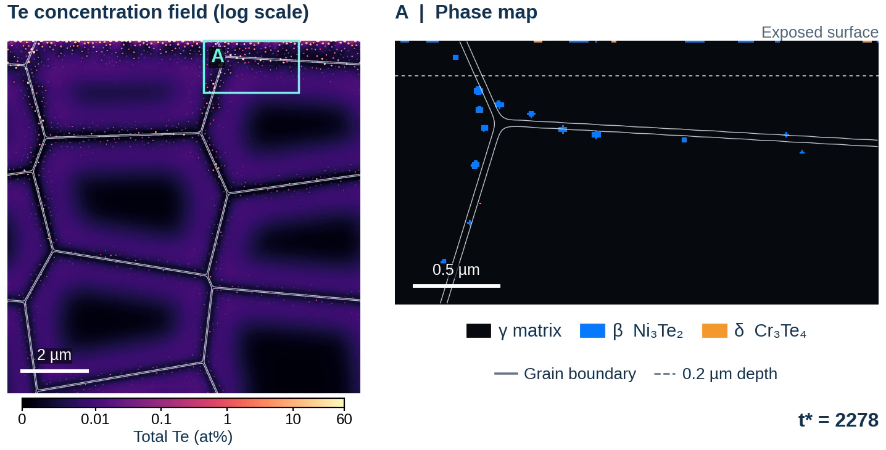

A phase-field model for stoichiometric compounds
Developing a reaction-extent model that lets the solution-phase composition relax as compounds form in a ternary system.
Explore the modelDoctoral research at Kyung Hee University focuses on how stoichiometric compounds form in alloys.
Developing a reaction-extent model that lets the solution-phase composition relax as compounds form in a ternary system.
Explore the model
Using GPU-accelerated simulations to track where Te penetrates the alloy and where Ni₃Te₂ and Cr₃Te₄ form in materials for molten salt reactors.
Watch the simulationNo upcoming meetings listed yet.
– · Jeju, South Korea
– · Jeju, South Korea
– · San Diego, USA
– · Busan, South Korea
– · Pyeongchang, South Korea
– · Jeju, South Korea
– · Jeju, South Korea
– · Honolulu, Hawaii, USA
– · Online
– · Changwon, South Korea · Hybrid
– · Hoengseong, South Korea · Hybrid
– · Online
– · Jeju, South Korea · Hybrid
– · Online
– · Online
– · Online